Ferragudo Bay
Ferragudo, concelho de Lagoa. 45 frações em primeira linha de água, à entrada da vila. Para a Rising Stone.
Onde Ferragudo se abre.
Para que cheguem ao comprador como um só produto, não como vários trabalhos separados.
Revemos o produto à luz do posicionamento e preparamos a marca e os ativos para o vender. Quanto mais cedo entramos, mais podemos mudar.
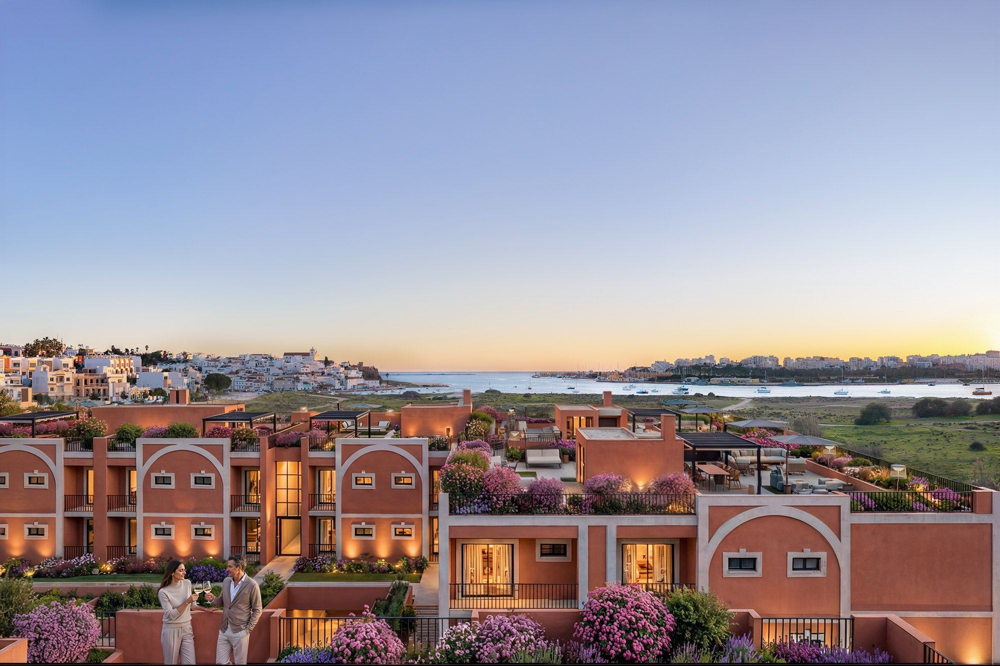
Quando cada parte é contratada à parte, cada fornecedor responde pela sua. A coerência do todo fica a cargo do promotor, muitas vezes sem ter decidido assumi-la.
E muitas vezes as plantas fecham-se antes de se decidir para quem se vai vender. O marketing chega depois e vende o que ficou desenhado.
É esse o lugar que ocupamos.
Para um promotor, uma preparação desalinhada paga-se em tempo e em preço. Um lançamento que atrasa continua a pagar juros. Um produto mal posicionado vende abaixo do que podia.
Num empreendimento de milhões de euros, pequenas diferenças no prazo de comercialização ou no preço de venda representam centenas de milhares de euros. É por isso que as decisões tomadas antes do lançamento merecem atenção.
Exemplos ilustrativos, com hipóteses simplificadas. Os números mudam de projeto para projeto.
Ferragudo, concelho de Lagoa. 45 frações em primeira linha de água, à entrada da vila. Para a Rising Stone.
Onde Ferragudo se abre.
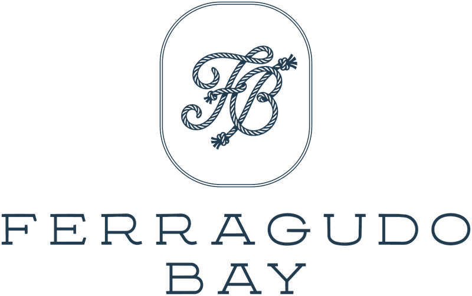
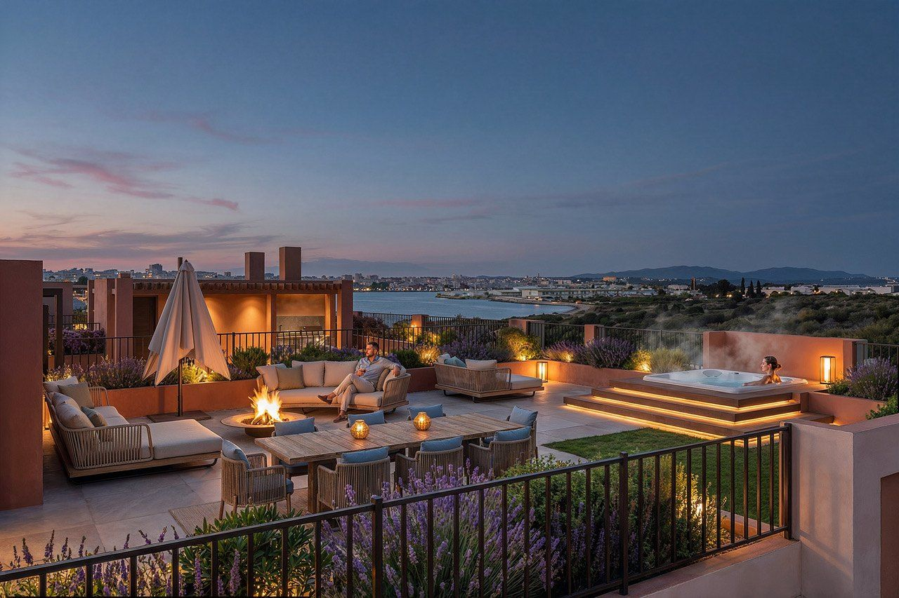
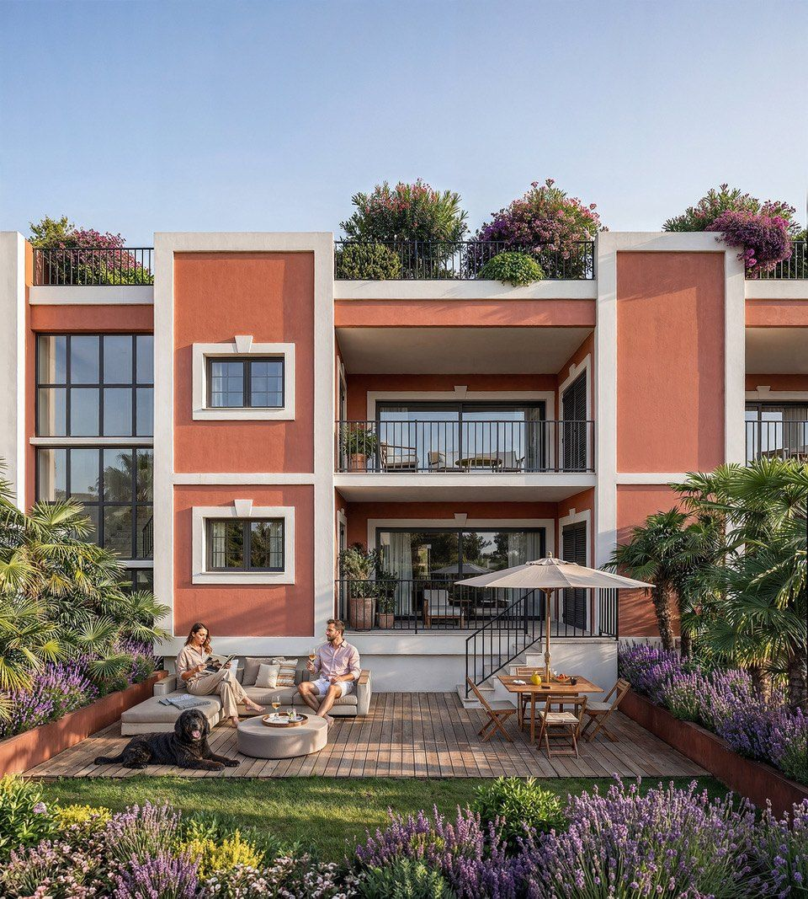
Uma localização rara, à entrada da vila e em primeira linha de água. Arquitetura desenhada e renders de qualidade.
Uma razão clara para o comprador escolher este projeto e não outro do mesmo troço de costa.
Uma posição própria no mercado, traduzida numa marca e numa apresentação comercial coerente.
Neste segmento, quem compra avalia a casa e também a forma como o condomínio é gerido.
O empreendimento ocupa o chão da Fábrica da Praia do Paraíso, que começou a laborar em novembro de 1883. É a mais antiga registada no levantamento académico das duas margens do Arade.
O sítio chama-se Passagem. É o nome oficial do lugar, com código postal próprio, e não um nome inventado para a marca.
Da entrada do condomínio à praia do estuário são cerca de oitenta metros, sem nada construído pelo meio.
Nada disto estava no material que recebemos.
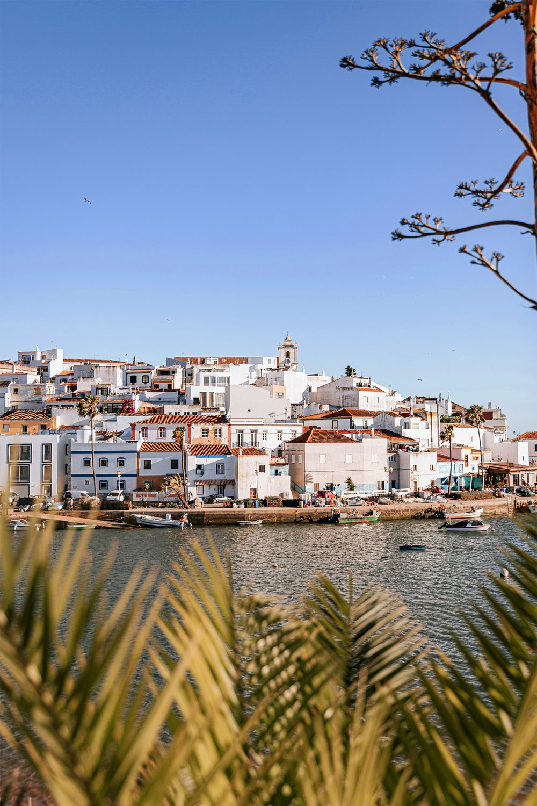
Um lugar de passagem. Uma casa para ficar.
A Passagem dá o conceito. A fábrica dá-lhe a prova.
O nome do lugar passou a estruturar tudo: a narrativa, a hierarquia dos argumentos e a ordem por que o projeto se apresenta a um comprador.
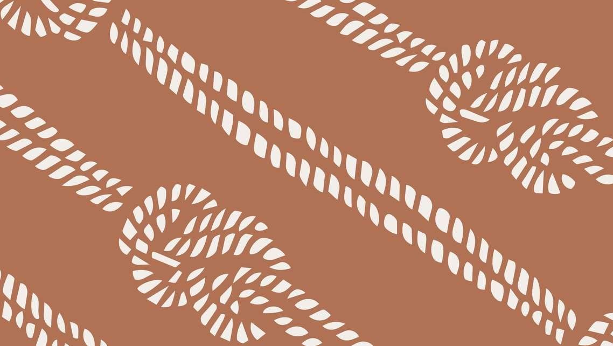
Marca e sistema visual. Narrativa e argumentário. Website. Filme. Outdoors. Lançamento online. Materiais para a equipa comercial.
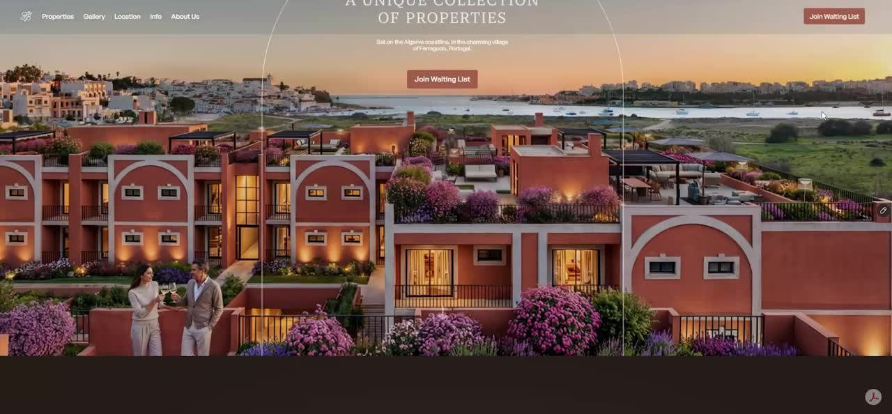
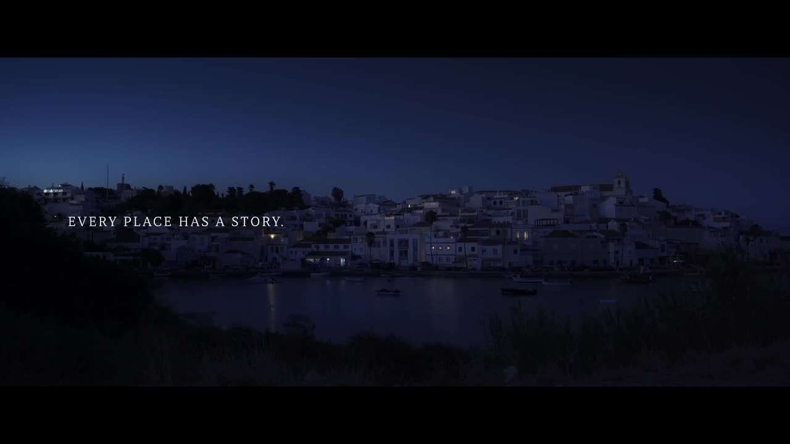
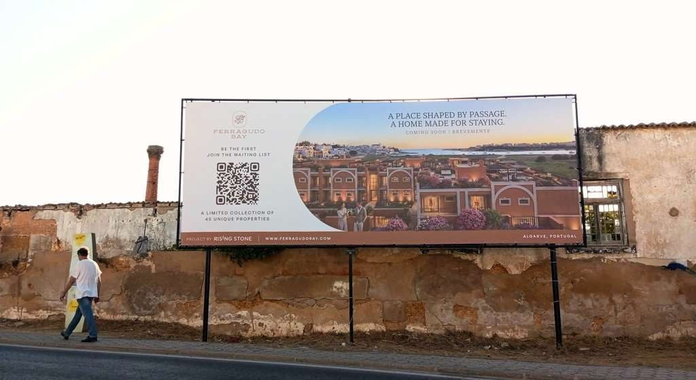
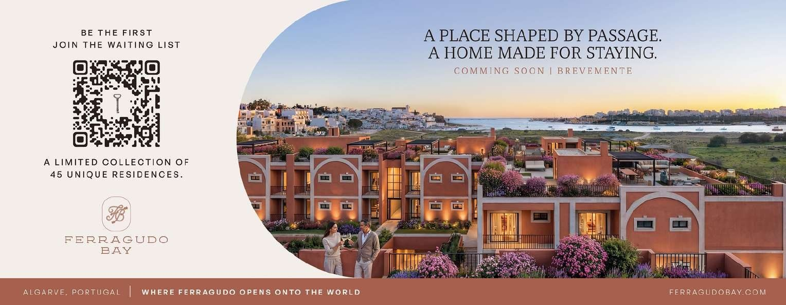
contactos de interessados nos primeiros três dias do pré-lançamento online, a 19 de setembro de 2026. O lançamento oficial é em fevereiro de 2027.
Está a preparar um empreendimento? Falamos sobre a fase em que está.
Nem todos os projetos precisam das cinco. Identificamos as que faltam decidir e começamos por aí.
O núcleo é sempre o mesmo. O resto é à medida.
Investigação. Posicionamento. Revisão de produto, quando ainda é possível. Direção.
À medida do projeto: marca, narrativa, website, brochuras, filme, renders, sales kit, lançamento.
Depois do lançamento: atualização de materiais, conteúdo, comunicação de obra, novas fases comerciais.
Não substituímos o arquiteto do projeto nem a mediação. Às plantas, fazemos recomendações à luz do posicionamento, e é o autor quem decide e desenha. À equipa comercial, entregamos o empreendimento pronto a ser apresentado como um só produto.
Diretor de operações de uma organização cívica que cresceu de 3 para mais de 30 pessoas, em 3 continentes. Jurista, especializado em fiscalidade e gestão.
Arquiteto, licenciado e mestre pela Universidade de Lisboa. Há mais de seis anos em coordenação técnica de projetos e due diligence de imóveis. Acompanha obra, do desenho à execução.
Nove anos de branding, com dezenas de projetos e clientes na Europa. Mestrado pela Aalto, na Finlândia. Dá aulas como convidado na Universidade de Évora.
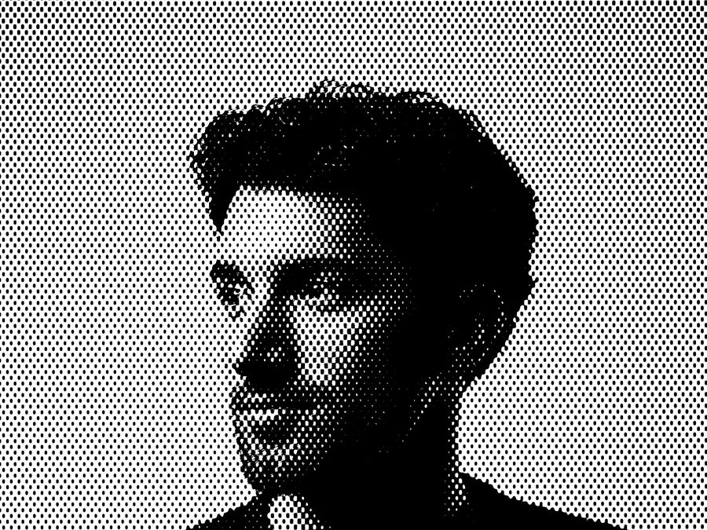
Edita vídeo há quinze anos, sete deles profissionalmente. Videógrafo e motion designer, com pós-produção numa agência premiada nos Leões de Cannes.
A primeira conversa serve para perceber o projeto e a fase em que está. Respondemos em vinte e quatro horas. Trabalhamos de Braga a Portimão.